Monitoring Jobs¶
Overview¶
The Monitor application lets you monitor and control your jobs after they have been submitted to the farm. This documentation only covers some of the basics regarding the Monitor application. For more in-depth information, see the Monitor documentation.
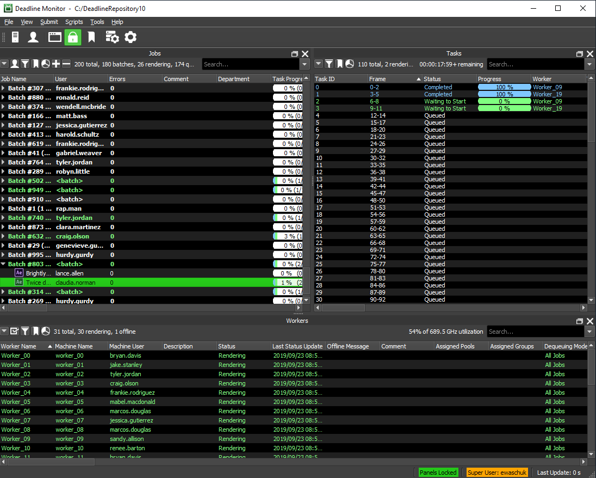If you’re launching the Monitor for the first time on your machine, you will be prompted with a Login dialog. Simply choose your user name or create a new one before continuing. Once the Monitor is running, you’ll see your user name in the bottom right corner. If this is the wrong user, you can switch to another user by selecting File -> Change User. Note that if your administrator set up Deadline to lock the user to the system’s login account, you will have to log off of your system and log back in as the correct user.
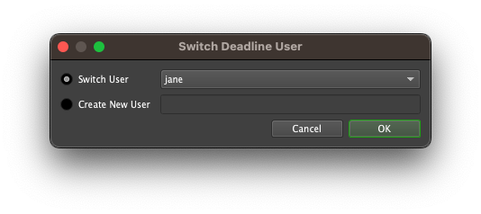Finding Your Jobs¶
Information in the Monitor is broken up into different panels. When monitoring your jobs, you typically want to use the following panels:
Job Panel: This panel shows all the jobs in the farm.
Task Panel: When a job is selected, this will show all the tasks for the job.
Job Reports Panel: When a job is selected, this will show all reports (logs and errors) for the job.
These panels, and others, can be created from the View menu, or from the main toolbar. They can be re-sized, docked, or floated as desired. This allows for a highly customized viewing experience which is adaptable to the needs of different users. See the Panel Features documentation for instructions on how to create new panels in the Monitor.
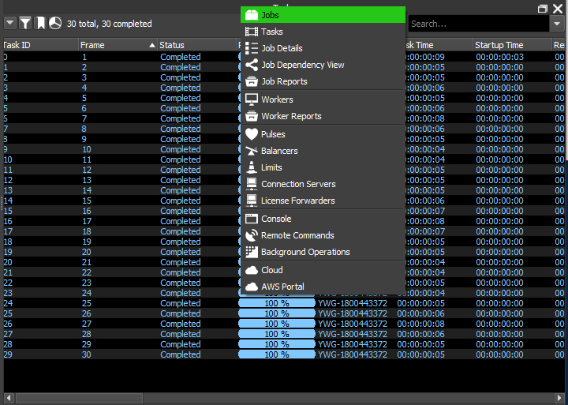The easiest way to find your jobs is to enable Ego-Centric Sorting in the job panel’s drop down menu, which can be found in the upper-right corner of the panel. This keeps all of your jobs at the top of the job list, regardless of which column the job list is sorted on. Then sort on the Submit Date/Time column to show your jobs in the order they were submitted.
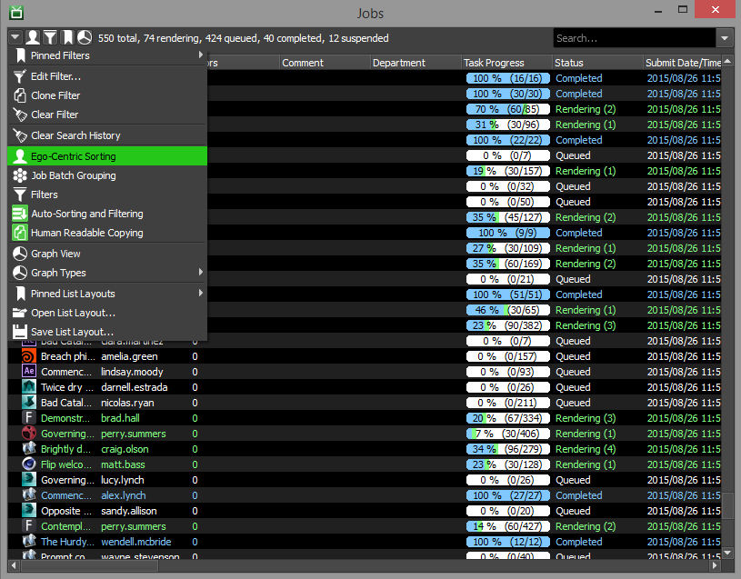Filtering the Job List¶
Another way to find the jobs you are interested in is to use the filtering options in the job panel. The Quick Filter option in the job panel’s drop down menu will open a side panel that allows you to filter jobs using the Quick Filters, or using the advanced Filters. Quick filters can filter on job status, pool, group, secondary pool, plugin or user and are applied as they are toggled.
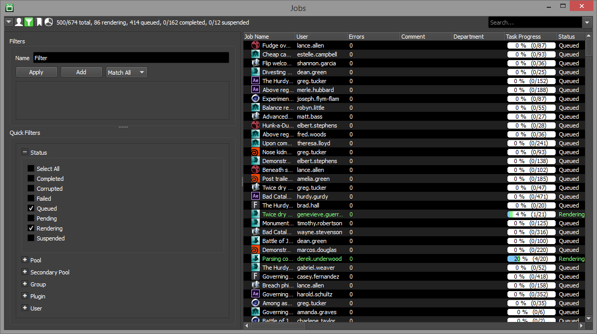For more advanced filtering, use the Filters section of the panel. Any changes made in the Filters section will not be applied to the panel until the “Apply” button is pressed.
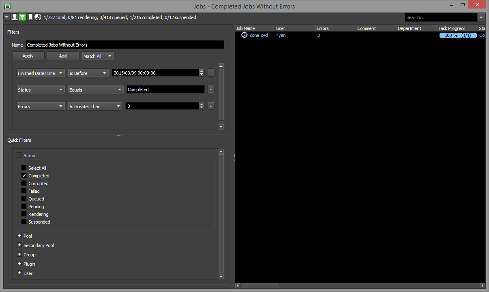You can also use the Edit Filter option in the drop down menu to filter on any column in the job list. If you would like to save a filter for later use, use the Pinned Filters option in the drop down menu to pin your filter. You will then be able to select it later from the Pinned Filters sub menu.
Finally, you can use the search box above the job list to filter your results even further.
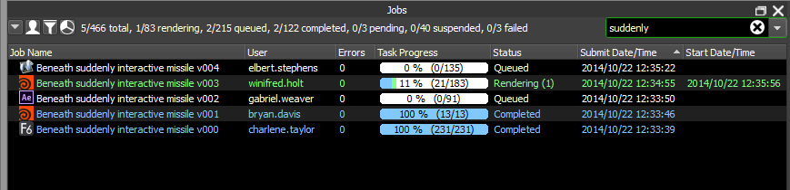Job Batches¶
Jobs that share the same Batch Name property will be grouped together in the job list. All of the job submitters that are included with Deadline will automatically set the Batch Name if they are submitting multiple jobs that are related to each other. The Batch Name for a job can be modified in the Job Properties in the Monitor.
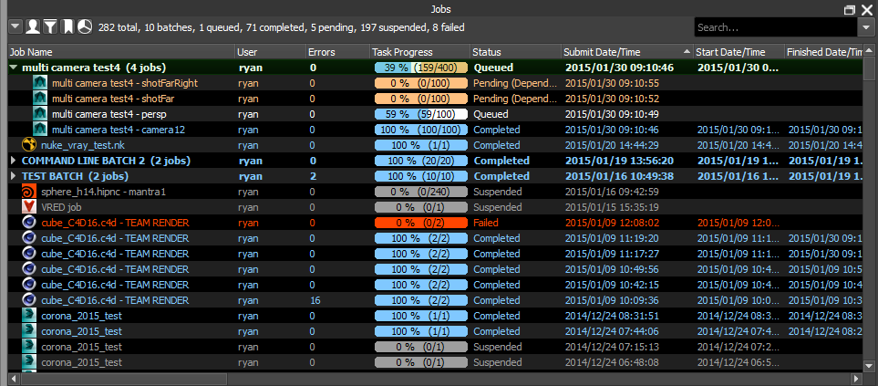If you prefer to not have the jobs grouped together in the job list, you can disable the Job Batch Grouping option in the drop down menu.
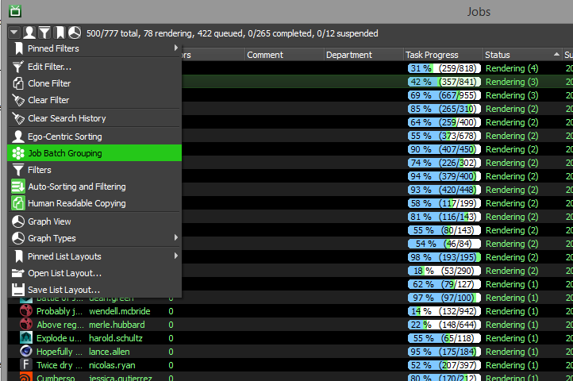Controlling Your Jobs¶
If you need to pause your job, you can right-click on the job in the job list and select Suspend job. When you are ready to let the job continue, simply right-click on the job again and select Resume Job. See the Job States documentation for more information.
To modify the properties of your job, you can double-click on the job, or right-click on it and select Modify Properties. Here you can change scheduling options such as priority and pool, as well as other general properties like the job name.
If you wish to limit which render nodes your job runs on, as well as the number of nodes that can render it concurrently, you can do so on the Machine Limit page.
Depending on the application you’re rendering with, you may see an extra page at the bottom of the properties list (with the name of the plugin). This page will allow you to modify properties which are specific to that application. More information on job properties can be found in the Job Properties documentation.
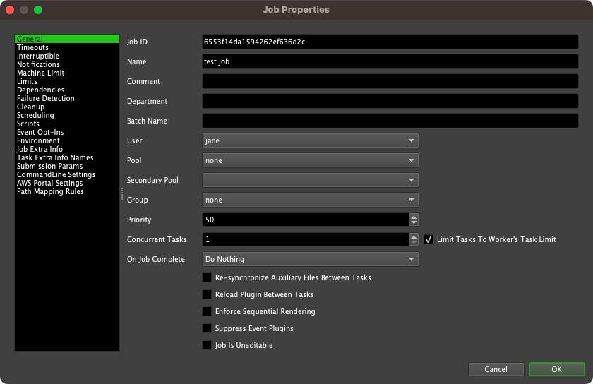How Can I View Job Statistics?¶
The Job Details panel shows all available information about the job that is currently selected. The information is split up into different sections that can be expanded or collapsed as desired. Job statistical information can be found by expanding the Statistics section as shown below.
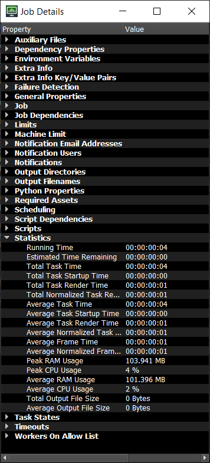Why Is My Job Not Rendering?¶
If your job isn’t being rendered and you think it should be, you can use the Find Render Candidates.. feature in the the Job List right-click menu. This will help you determine which Workers can render the job and more importantly, the reason why a Worker cannot render the job.
Alternatively you can use the Job Candidate Filter option in the panel’s drop down menu to see the Workers that can render the job. See the Job Candidate Filter section in the Worker Configuration documentation for more information.
The job could also be producing errors when rendering. See Handling Job Errors below.
Why Is My Pending Job Not Being Released?¶
Pending job scans (to release a pending job as all its dependencies are now true) are carried out by IDLE Workers and Pulse if it is running.
Note you can stop Workers from executing the pending job scan via the Pending Job Scan Settings in your Repository Config. In this case, only Pulse will execute the pending job scan.
To understand why a pending job is not being ‘released’ by the pending job scan, please consult the Job Dependency Options via the job properties dialog. Additionally, the Test Dependencies (play symbol) button in the Dependency View can be used to see what is stopping a pending job from being released. The Worker/Pulse log can also be considered for further information together with Verbose Logging enabled which is configured via Application Logging.
Finally, if ALL your Workers are busy rendering (i.e. never IDLE), then the release of jobs from the ‘pending’ state can seem to take a long time in your farm. Running Pulse solves this issue, as it carries out ‘regular’ pending job scans and therefore helps to ‘regulate’ your farm, providing consistency. Yet, if Pulse fails, the Workers will still execute the pending job scan, just not so frequently due to the reason outlined above. You can also run multiple Pulses to provide Pulse Redundancy.
Handling Job Errors¶
If your job starts producing errors, you’ll notice it will change from green to brown, then eventually to red (depending on the number of errors). These error reports can be viewed in the Job Reports panel.
To open the Job Reports panel go to View menu, or right-click you job and select. Here you will find all the reports generated for a job including the error reports which will be red. You can filter and sort the reports to help find what you are looking for.
Often, the error reports will clearly show what the cause of the error is, allowing you can take the appropriate steps to resolve the problem. If you’re ever unsure of what an error means, feel free to send the error report to Deadline Support and we will happily do our best to assist you. See the Job Reports and History documentation for more information.
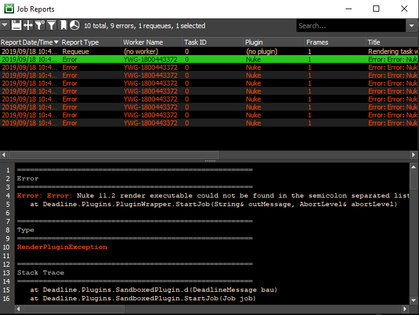Completed Jobs¶
When your job is complete, you can view the output images by right-clicking on the individual tasks in the task list and selecting the output filename. The image will open in the image veiwer you have set for the file type.
Note that this option isn’t always available for some applications. In most cases, you can view the output image folder by right-clicking on the job and selecting Explore Output. See the Job Output documentation for more information.
You can also view the logs for the job in the Job Reports panel, which can be opened from the View menu, or from the job’s right-click menu. Finally, once you are happy with the results and no longer need the job, you can delete it by right-clicking on the job and selecting Delete Job.
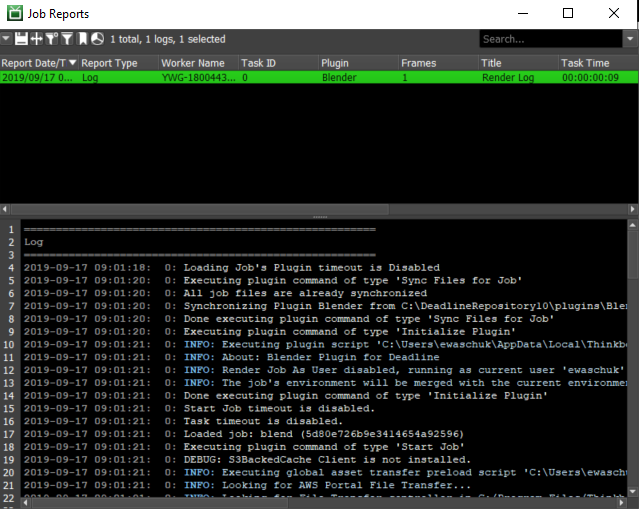Re-rendering Jobs¶
If you have a completed job that you need to re-render, you can do so by right-clicking on the job and selecting Requeue Job. If you only need to re-render a few bad frames, you can just requeue their corresponding tasks by right-clicking on one or more tasks in the task list, selecting Requeue Tasks.
In some cases, the Monitor can try to detect bad frames for you. You can use this feature by right-clicking on the job and selecting Scan For Missing Output. The scan will check for missing frames or frames that don’t meet a size threshold. You will then have the option to requeue all the corresponding tasks automatically.
Note that the Scan For Missing Output option isn’t available for all jobs. See the Job Output documentation for more information.

{kind=link}
{kind=link}
{kind=link}
{kind=link}
{kind=link}
{kind=link}
{kind=link}
{kind=link}
{kind=link}
{kind=link}
{kind=link}
{kind=link}
{kind=link}
{kind=link}
{kind=link}
{kind=link}